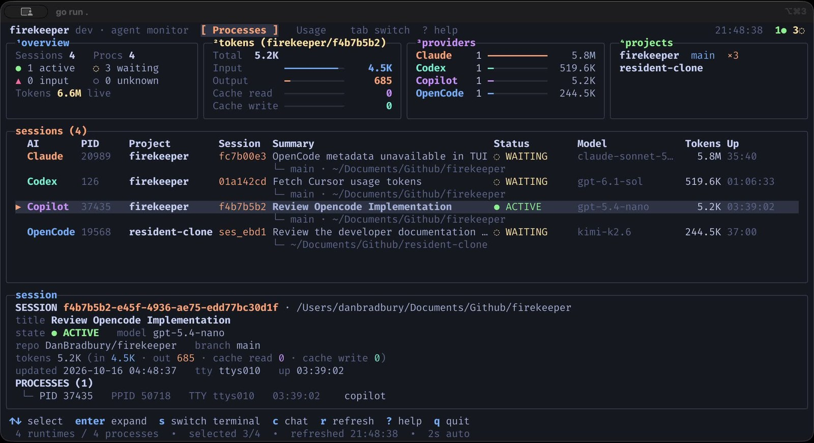

See what your AI coding agents are doing right now, how many tokens they used, and what they said. One tool for seven agent CLIs. If you want, it can also send redacted session history to a dashboard server. Nothing starts and nothing uploads unless you ask.

Each agent keeps its own history, in its own format, in its own folder. Firekeeper reads them all and gives you one view. Use the parts you want.
A keyboard-driven terminal UI finds your agent processes, groups each with its children, and shows state, model, working directory, Git branch, and tokens.
Press s to focus the terminal holding a session. Supports Ghostty, Terminal.app, and iTerm2 on macOS.
Press c on any session to read its prompts and replies right in the terminal. Read locally and read-only, following new messages live.
Codex limits, and token history by model for Codex, Copilot CLI, Kimi, and Claude Code, read from local files.
Optional. backfill and the daemon read your agents' local history, redact it, and upload it to a dashboard server over an open API. You choose the providers.
Prebuilt binaries for macOS (Apple Silicon and Intel) and Linux (amd64 and arm64). No Go toolchain needed.
brew install DanBradbury/tap/firekeeper firekeeper
Upgrade later with brew upgrade. Firekeeper also offers to update itself when a new release is out.
curl -fsSL https://raw.githubusercontent.com/DanBradbury/firekeeper/main/install.sh | sh firekeeper
Installs to ~/.local/bin (override with FIREKEEPER_INSTALL_DIR), never uses sudo, and verifies the download against the release's SHA-256 checksums. Pin a release with sh -s -- --version vX.Y.Z.
go install github.com/DanBradbury/firekeeper@latest firekeeper
Requires Go 1.26 or newer. Builds from source report their version as dev and never check for updates.
Start with the terminal dashboard. Send sessions to a server only when you want history somewhere else. Every step up is a separate command you run on purpose.
firekeeper
Watch running sessions, read their chat, check usage, and jump to their terminal.
firekeeper login --server https://…
Link the machine with a browser approval, then run report, backfill, or the daemon for the providers you allow.
Process discovery works without any integration. Each provider also has an adapter that reads its local session data, read-only.
| Provider | Process discovery | State & metadata | Usage tab | Transcript upload |
|---|---|---|---|---|
| Codex | Yes | Yes | Limits and history | Yes |
| GitHub Copilot CLI | Yes | Yes | Local history and plan details | Yes |
| Claude Code | Yes | Yes | Token history | Yes |
| Kimi Code | Yes | Metadata | Token history | Yes |
| OpenCode | Yes | Yes | No | Yes |
| Gemini CLI | Yes | Yes, no NEEDS INPUT | No | Yes |
| Cursor CLI | Yes | Yes, no NEEDS INPUT | No | Yes, no timestamps or tokens |
States describe the latest event Firekeeper can see, not ground truth. Provider data formats can change between CLI releases, and adapters evolve with them. macOS is the main target; Linux is best effort.
From the terminal dashboard to uploading history in four steps. Stop at any step.
Start an agent in another terminal and it appears within a couple of seconds.
firekeeper
Optional, and only for a server you have access to. The command prints a URL and a code; open it, sign in, and approve.
firekeeper login --server https://dash.example.com
The dry run reads and redacts transcripts and prints counts without opening a connection. Then name the providers you allow.
firekeeper report --dry-run firekeeper report --provider codex --provider claude
Bring in the history already on your machine, in one pass.
firekeeper backfill --all --dry-run firekeeper backfill --all
Install the daemon as a per-user service. It detects your agent CLIs and reports them in the background.
firekeeper daemon install --dry-run firekeeper daemon install
Firekeeper is built to run on hardware you control and to do nothing you did not ask for.
An unconfigured report or daemon sends nothing. You name each provider you allow.
Every event passes through redaction before it leaves the machine.
A repository containing .firekeeper-ignore, or an excluded directory, is never read.
Firekeeper never changes your agents' databases, logs, or launch commands.
Uploads go only to the server you name, over HTTPS unless it is on this machine, with a token bound to this machine.
Plain firekeeper opens the dashboard. Everything else is an explicit subcommand.
firekeeperTerminal dashboard: Processes and Usagefirekeeper login --server URLLink this machine with a browser approvalfirekeeper reportUpload the sessions running right nowfirekeeper backfill --allImport past sessions from local historyfirekeeper daemon installReport in the background from loginfirekeeper whoamiServer, account, and machine this one reports asfirekeeper logoutRevoke and remove this machine's tokenfirekeeper snapshot --jsonPrint discovered sessions as JSONfirekeeper config showMerged configuration, token masked